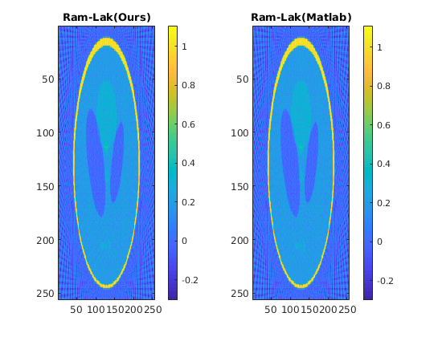
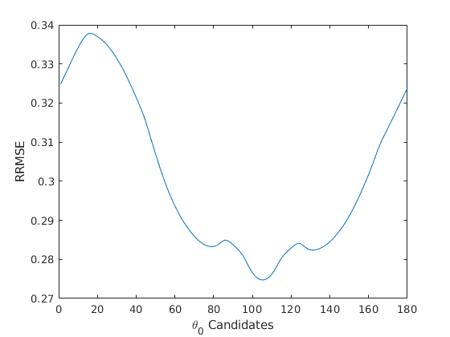
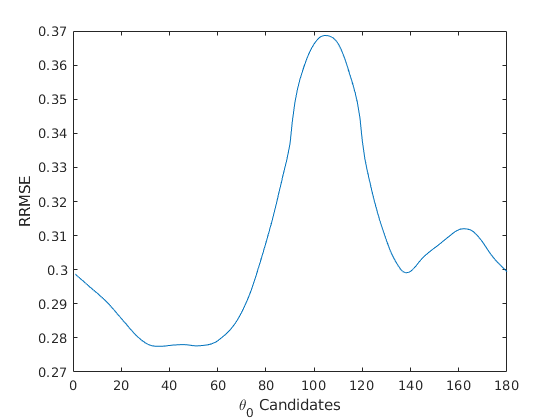

Contents
Assignment 3, CT Imaging
CS736: Medical Image Computing, IIT Bombay (Spring 2019) Dhruv Shah and Ansh Khurana
Code for all 3 questions has been combined in myMainScript.m
warning('off', 'all'); clc; clear all; close all;
Question 1
img = phantom(128);
Part (a)
myIntegration is implemented in myImplementation.m The integration is the lower Darboux sum over the pixel values on a given line specifed by (t, ). The parameter $\Delta$s is configurable and is chosen to be 1*pixel width.
We have used bilinear interpolation technique.
Justification: The smaller the value of $\Delta$s, the finer and smoother the radonTransform is. Lower value of $\Delta$s ensure more accurate reimann-integral approximation. However, very low value of $\Delta$s can lead to higher computational expenses due to large number of interpolation steps. Thus we have chose $\Delta$s as 0.5,1 and 3.
Bilinear interpolation produces better results than nearest neighbour interpolation technique. We did not use cubic interpolation technique to avoid the computational expenses.
Part (b)
Implementation of Radon transformation can be found in myRadonTrans.m
Instead of calling myIntegration over the different ranges of t and , the computation has been vectorized. See part (c) for radonTrans calculated with different parameters.
Part (c)
Computation of Radon transform for different parameters:
dt = 5; dth = 5; ds1 = 0.5; ds2 = 1; ds3 = 3; t_range = -90:dt:90; theta_range = 0:dth:175; Rf1 = myRadonTrans(img, t_range, theta_range, ds1); iptsetpref('ImshowAxesVisible','on') figure('Position', [50, 100, 1200, 400]); subplot(1,3, 1), imshow(Rf1, [],'Ydata', t_range, 'Xdata', theta_range, 'InitialMagnification','fit') xlabel('\theta (degrees)') ylabel('t') title("Radon transform \Delta\theta = 5, \Deltat = 5, \Deltas = 0.5"); colormap(gca,hot), colorbar Rf2 = myRadonTrans(img, t_range, theta_range, ds2); iptsetpref('ImshowAxesVisible','on') subplot(1,3, 2), imshow(Rf2, [],'Ydata', t_range, 'Xdata', theta_range, 'InitialMagnification','fit') xlabel('\theta (degrees)') ylabel('t') title("Radon transform \Delta\theta = 5, \Deltat = 5, \Deltas = 1"); colormap(gca,hot), colorbar Rf3 = myRadonTrans(img, t_range, theta_range, ds3); iptsetpref('ImshowAxesVisible','on') subplot(1,3,3), imshow(Rf3, [],'Ydata', t_range, 'Xdata', theta_range, 'InitialMagnification','fit') xlabel('\theta (degrees)') ylabel('t') title("Radon transform \Delta\theta = 5, \Deltat = 5, \Deltas = 3"); colormap(gca,hot), colorbar fig = gcf; save('../results/1c.mat', 'fig', '-mat'); % The plots for values at theta = 0 and theta = 90 figure('Position', [50, 50, 1200, 600]); subplot(1, 2, 1), plot(Rf1(:, 1)'); title("\theta=0\degree"); xticklabels([]); xlabel(" -90 <= t <= 90 (\Deltat = 5)") subplot(1, 2, 2), plot(Rf1(:, 19)'); title("\theta = 90\degrees") xticklabels([]); xlabel(" -90 <= t <= 90 (\Deltat = 5)") sgtitle("Plot for radon transform values (\Deltas=0.5)"); fig = gcf; save('../results/1c(1).mat', 'fig', '-mat'); figure('Position', [50, 50, 1200, 600]); subplot(1, 2, 1), plot(Rf2(:, 1)'); title("\theta = 0\degree"); xticklabels([]); xlabel(" -90 <= t <= 90 (\Deltat = 5)") subplot(1, 2, 2), plot(Rf2(:, 19)'); title("\theta = 90\degrees") xticklabels([]); xlabel(" -90 <= t <= 90 (\Deltat = 5)") sgtitle("Plot for radon transform values (\Deltas=1)"); fig = gcf; save('../results/1c(2).mat', 'fig', '-mat'); figure('Position', [50, 50, 1200, 600]); subplot(1, 2, 1), plot(Rf3(:, 1)'); title("\theta = 0 \degree"); xticklabels([]); xlabel(" -90 <= t <= 90 (\Deltat = 5)") subplot(1, 2, 2), plot(Rf3(:, 19)'); title("\theta = 90\degrees") xticklabels([]); xlabel(" -90 <= t <= 90 (\Deltat = 5)") sgtitle("Plot for radon transform values (\Deltas=3)"); fig = gcf; save('../results/1c(3).mat', 'fig', '-mat');
With lower value of $\Delta$s both the image and 1-D plots are smoother. This is because lower step size ensures finer and more accurate riemann integrals. Thus variation is smoother. With large $\Delta$s the approximation is crude and the variation is rough.
Also one observes that values 0 degree 1-D plots are smoother than 90 degrees 1-D plot. This is because of greater variations along horizontal lines because of the oval patterns in the image which stretch more along the Y direction than the X.
Part (d)
Comparing different values of and $\Delta$t:
dt = 1; dth = 1; t_range = -90:dt:90; theta_range = 0:dth:175; Rf11 = myRadonTrans(img, t_range, theta_range, 1); figure('Position', [50, 100, 1200, 400]); subplot(1,3, 1), imshow(Rf11, [],'Ydata', t_range, 'Xdata', theta_range, 'InitialMagnification','fit') xlabel('\theta (degrees)') ylabel('t') title("Radon transform \Delta\theta = 1, \Deltat = 1, \Deltas = 1"); colormap(gca,hot), colorbar dt = 3; dth = 3; t_range = -90:dt:90; theta_range = 0:dth:175; Rf33 = myRadonTrans(img, t_range, theta_range, 1); iptsetpref('ImshowAxesVisible','on') subplot(1,3, 2), imshow(Rf33, [],'Ydata', t_range, 'Xdata', theta_range, 'InitialMagnification','fit') xlabel('\theta (degrees)') ylabel('t') title("Radon transform \Delta\theta = 3, \Deltat = 3, \Deltas = 1"); colormap(gca,hot), colorbar dt = 5; dth = 5; t_range = -90:dt:90; theta_range = 0:dth:175; Rf55 = myRadonTrans(img, t_range, theta_range, 1); iptsetpref('ImshowAxesVisible','on') subplot(1,3,3), imshow(Rf55, [],'Ydata', t_range, 'Xdata', theta_range, 'InitialMagnification','fit'); xlabel('\theta (degrees)'); ylabel('t'); title("Radon transform \Delta\theta = 5, \Deltat = 5, \Deltas = 1"); colormap(gca,hot), colorbar; sgtitle("Radon transform for different values of \Deltat and \Delta\theta"); fig = gcf; save('../results/1d.mat', 'fig', '-mat');
As we can observe, the smaller are the values of \Deltat and \Delta\theta, the finer and smoother the Radon transformation is. This promotes the usage of smaller \Deltat and \Delta\theta to get more accurate results. This ofcourse assumes that the CT scanner is using a parallel beam of rays and filtered back-projection for scanning. The trade off of decreasing \Deltat and \Delta\theta is that one has requires scanning data accorss more lines which is practically not the case. This also requires a larger computational effort along with higher exposure to radiation. \Delta t = 1 and \Delta \theta = 1 seems to be a good choice.
Part (e)
For a N*N image, we would like to have approximately O(N*N) projections to reconstruct the image. A suitable choice for this gives \Deltat = 1 and \Delta\theta = 1. Upon increasing the values of \Deltat and \Delta\Theta we are loosing information to reconstruct the image while decreasing the value further could lead to increase in computational effort and higher exposure times.
Effect of $\Delta$s >> 1 and $\Delta$s << 1 (pixel-width)
$Delta$s decides the accuracy of our riemann integral approximation. Very large values of \Delta s cause inaccurate approximations of integral while very low values are also not useful since this causes wastage of computational effort as pixel intensity values are on a discrete grid separated by 1 pixel-width. Lower \Delta s requires large number of interpolations and does not improve much upon the integral.
Question 2
clear all; iptsetpref('ImshowAxesVisible','off') imsize = 256; img = phantom(imsize); theta = [0:3:177]; imrad = radon(img, theta); imdec_BP = iradon(imrad, theta, 'linear', 'None', 1, imsize); % imagesc(imdec_BP) modes = {'Ram-Lak', 'Cosine', 'Shepp-Logan'};
Verifying against Matlab implementations
i = 1; for filt_type = modes imfilt = myFilter(imrad, char(filt_type), 1); imdec_ours = iradon(imfilt, theta, 'linear', 'None', 1, imsize); imdec_matlab = iradon(imrad, theta, 'linear', char(filt_type), 1, imsize); figure; subplot(1, 2, 1); imagesc(imdec_ours); colorbar; title(strcat(char(filt_type), '(Ours)')); subplot(1, 2, 2); imagesc(imdec_matlab); colorbar; title(strcat(char(filt_type), '(Matlab)')); fig = gcf; save(strcat('../results/2(', num2str(i), ').mat'), 'fig', '-mat'); i = i+1; end i = 1;


Part (a)
figure('Position', [100, 100, 1000, 400]); subplot(1, 2, 1); imagesc(img); title('Original'); subplot(1, 2, 2); imagesc(iradon(imrad, theta, 'linear', 'None', 1, imsize)); title('Unfiltered Back Projection') fig = gcf; save('../results/2a.mat', 'fig', '-mat'); for filt_type = modes imfilt1 = myFilter(imrad, char(filt_type), 1); imdec_ours1 = iradon(imfilt1, theta, 'linear', 'None', 1, imsize); imfilt2 = myFilter(imrad, char(filt_type), 0.5); imdec_ours2 = iradon(imfilt2, theta, 'linear', 'None', 1, imsize); figure('Position', [100, 100, 1000, 400]); subplot(1, 2, 1); imagesc(imdec_ours1); title(strcat(char(filt_type), '(L = w_{max})')); subplot(1, 2, 2); imagesc(imdec_ours2); title(strcat(char(filt_type), '(L = w_{max} / 2)')); fig = gcf; save(strcat('../results/2a(', num2str(i), ').mat'), 'fig', '-mat'); i = i+1; end
With lower frequency (w_max/2) the images are slightly blurred as compared to w_max. This is because lower frequency means some high frequency part of the fourier transform are not present which leads to less sharp and blurred images.
Amongst the filters, Ram-Lak produces a sharper image around the boundary of the main oval. Cosine filter produces a less sharp, smoother image. This is because Ram-Lak cuts off high-frequency parts of the transform the least, while cosine performs maximum smoothing and blurring.
Part (b)
g1 = fspecial('gaussian', 11, 1); g5 = fspecial('gaussian', 51, 5); img1 = conv2(img, g1, 'same'); img5 = conv2(img, g5, 'same'); imrad1 = radon(img1, theta); imrad5 = radon(img5, theta); % 3 Different versions of the Shepp-Logan image figure('Position', [50, 100, 1200, 400]); subplot(1,3,1), imagesc(img); title("S_0"); subplot(1,3,2), imagesc(img1); title("S_1"); subplot(1,3,3), imagesc(img5); title("S_2"); sgtitle("Three Different versions of the Shepp-Logan image"); fig = gcf; save('../results/2b(1).mat', 'fig', '-mat'); imfilt = myFilter(imrad, 'Ram-Lak', 1); imfilt1 = myFilter(imrad1, 'Ram-Lak', 1); imfilt5 = myFilter(imrad5, 'Ram-Lak', 1); imdec = iradon(imfilt, theta, 'linear', 'None', 1, imsize); imdec1 = iradon(imfilt1, theta, 'linear', 'None', 1, imsize); imdec5 = iradon(imfilt5, theta, 'linear', 'None', 1, imsize); rrmse_0 = rrmse(img, imdec); rrmse_1 = rrmse(img1, imdec1); rrmse_5 = rrmse(img5, imdec5); figure('Position', [50, 100, 1200, 400]); subplot(1,3,1), imagesc(imdec); title(strcat("R_0, RRMSE(S_0, R_0) = ", num2str(rrmse_0))); subplot(1,3,2), imagesc(imdec1); title(strcat("R_1, RRMSE(S_1, R_1) = ", num2str(rrmse_1))); subplot(1,3,3), imagesc(imdec5); title(strcat("R_2, RRMSE(S_2, R_2) = ", num2str(rrmse_5))); sgtitle("Filtered back projections for the three images"); fig = gcf; save('../results/2b(2).mat', 'fig', '-mat');
RRMSE decreases from (S_0, R_0) to (S_1, R_1) to (S_2, R_2). This is because the filtered back-projection is an approximated inverse of the original image. The resulting images from this operation have blurred out higher frequency components and thus sharp portions of the images are blurred out. Since S3 is already blurred the filtered back-projection does not cause significant loss in details. Thus RRMSE is lower.
Part (c)
fft_n = 1024; logger = zeros([fft_n/2, 3]); for i = 1:fft_n/2 frac = i * 2 / fft_n; imfilt = myFilter(imrad, 'Ram-Lak', frac); imfilt1 = myFilter(imrad1, 'Ram-Lak', frac); imfilt5 = myFilter(imrad5, 'Ram-Lak', frac); imdec = iradon(imfilt, theta, 'linear', 'None', 1, imsize); imdec1 = iradon(imfilt1, theta, 'linear', 'None', 1, imsize); imdec5 = iradon(imfilt5, theta, 'linear', 'None', 1, imsize); logger(i, 1) = rrmse(img, imdec); logger(i, 2) = rrmse(img1, imdec1); logger(i, 3) = rrmse(img5, imdec5); end figure; plot([2/fft_n:2/fft_n:1], logger, 'LineWidth', 1.5); legend('Noiseless', '\sigma=1', '\sigma=5') xlabel('L / w_{max}'); ylabel('RRMSE') fig = gcf; save('../results/2c.mat', 'fig', '-mat');
Upon increasing the frequency the RRMSE decreases which is expected since higher frequency transform is more accurate and consists of more information. Higher frequency preserves more sharpness/detail.
Question 3
clear all; % We arbitrarily choose the Shepp-Logan filter for FBP. filt_type = 'Shepp-Logan'; t0_cand = [1:180]; theta_range = 150; logger = zeros(numel(t0_cand), 2);
Part (a, b), Dataset myPhantom
load('../data/myPhantom.mat'); img = imageAC; imsize = size(img, 1); % Assumed square for t0 = t0_cand thetas = mod([t0:t0+theta_range], 180); imrad = radon(img, thetas); imfilt = myFilter(imrad, filt_type, 1); imdec = iradon(imfilt, thetas, 'linear', 'None', 1, imsize); logger(t0, 1) = rrmse(img, imdec); end [minval_phantom, min_t0_phantom] = min(logger(:, 1)); % min_t0 = 105; figure, plot(logger(:, 1)); xlabel('\theta_0 Candidates') ylabel('RRMSE') fig = gcf; save('../results/3a(1).mat', 'fig', '-mat'); thetas = mod([min_t0_phantom:min_t0_phantom+theta_range], 180); imrad = radon(img, thetas); imfilt = myFilter(imrad, filt_type, 1); imdec = iradon(imfilt, thetas, 'linear', 'None', 1, imsize); figure, imagesc(imdec); title(strcat('Best Reconstruction of myPhantom with \theta_0=', num2str(min_t0_phantom), ' RRMSE=', num2str(minval_phantom))); fig = gcf; save('../results/3b(1).mat', 'fig', '-mat');
Part (a, b), Dataset Chest
load('../data/CT_Chest.mat'); img = imageAC; imsize = size(img, 1); % Assumed square for t0 = t0_cand thetas = mod([t0:t0+theta_range], 180); imrad = radon(img, thetas); imfilt = myFilter(imrad, filt_type, 1); imdec = iradon(imfilt, thetas, 'linear', 'None', 1, imsize); logger(t0, 2) = rrmse(img, imdec); end [minval_chest, min_t0_chest] = min(logger(:, 2)); % min_t0 = 35; figure, plot(logger(:, 2)); xlabel('\theta_0 Candidates') ylabel('RRMSE') fig = gcf; save('../results/3a(2).mat', 'fig', '-mat'); thetas = mod([min_t0_chest:min_t0_chest+theta_range], 180); imrad = radon(img, thetas); imfilt = myFilter(imrad, filt_type, 1); imdec = iradon(imfilt, thetas, 'linear', 'None', 1, imsize); figure, imagesc(imdec); title(strcat('Best Reconstruction of CT_Chest with \theta_0=', num2str(min_t0_chest), ' RRMSE=', num2str(minval_chest))); fig = gcf; save('../results/3b(2).mat', 'fig', '-mat');